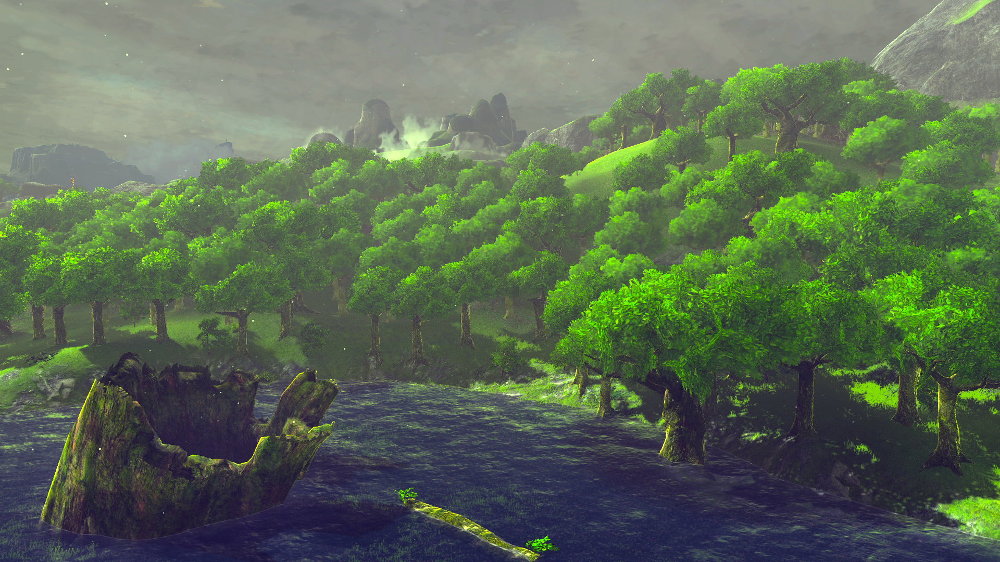

After that extremely weird encounter, you see something that catches your eye right away. It looks to be a small puppy and it jumps to you right as it sees you. It whines and looks like it is picking at the grass trying to eat something. You realize he must be starving so you decide that you have to look for some food to give him. Behind him you also notice another giant wall that seems to go up to the clouds.
“He is a friend not a foe. He is the key when he starts to grow. You must cross but to do so find the place where the lake is surrounded by moss.”
The voice startles him and he has no idea what it means. Is it about the cute little puppy? There’s only one body of water you see and it indeed is surrounded by moss upon moss.
